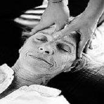

El masaje es el conjunto de maniobras, manuales
o mecánicas, realizadas de forma metódica sobre la totalidad
o una parte del cuerpo humano. Supone contacto físico entre dos
personas.
El masaje se hace con las manos, pero pueden emplearse también
sistemas mecánicos, como cintas vibradoras para el masaje de vibración,
o chorros de agua en el masaje subacuático.
Según su finalidad, podemos clasificar los masajes en:
|
|
 |
- Terapéuticos o curativos: que
se aplican para mejorar lesiones concretas.
- Higiénico-preventivos: cuya
finalidad principal es mejorar el estado de una zona concreta de la
piel.
Aquí clasificamos el que se describe a continuación, que
se puede realizar tanto para estimular la función circulatoria
de la zona y el aporte sanguíneo como para producir sedación
y relajación, con lo que además de aumentar el bienestar
y la comodidad de la persona, contribuye a disminuir la tensión
y la ansiedad.
Por lo tanto, los efectos de un masaje repercuten a nivel físico,
psíquico, emocional y energético.
- Normas básicas de aplicación
- Tanto el usuario como el auxiliar de enfermería deben estar
colocados en posición cómoda, para su adecuada aplicación.
- El masaje no debe ser brutal ni resultar doloroso para el usuario.
- Debe seguir un ritmo constante, mediante maniobras enlazadas.
Suele aplicarse comenzando con maniobras suaves, que van aumentando
la presión, para terminar con maniobras suaves de nuevo.
- El tiempo de duración no es fijo; normalmente oscila entre
5 y 15 minutos por cada segmento a tratar, y no debe resultar fatigoso
para el usuario.
- Para aplicar el masaje se emplea una loción, que se extiende
en las palmas de las manos de la persona que lo va a realizar después
de haberlas frotado varias veces. El frotamiento de las manos produce
calor y evita la sensación de frío que recibiría
el usuario.
- El masaje se realizará cuando no existan contraindicaciones
y observando si en la piel hay eritema, erosiones, hematomas u otras
lesiones, que se comunicarán y anotarán en la hoja
de evolución del usuario.
|